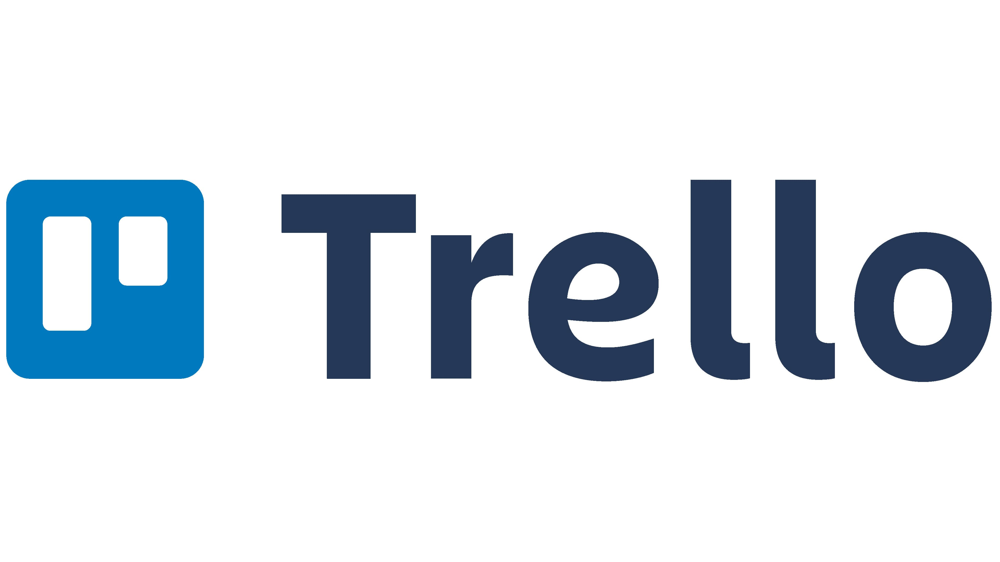
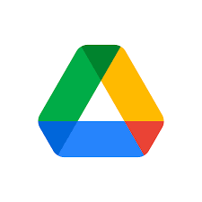
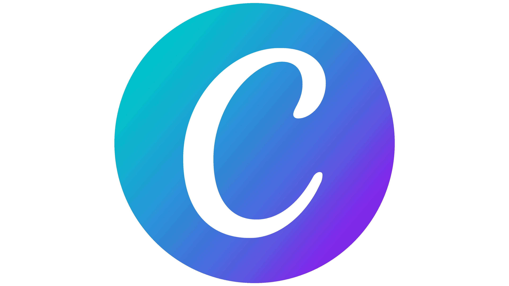

Actividad Inicial: ¿recuerdas cuáles son las fases de un proyecto tecnológico?
| DESCRIPCIÓN | APLICACIÓN ELEGIDA | DESCRIPCIÓN DE LA APP |
|
Se trata de una actividad donde el alumnado repasará sobre los conceptos más importantes de las fases de un proyecto tecnológico. Para ello, y utilizando un entorno gamificado a modo de pantalla de teléfono, irán respondiendo a las preguntas planteadas. Enlace a app. |
THUNKABLE |
¿Cómo usar Thunkable? ¿Cómo puedo acceder a la aplicación? |
Actividad 2: Planteamiento del problema
| DESCRIPCIÓN | APLICACIÓN ELEGIDA | DESCRIPCIÓN DE LA APP |
| En esta actividad, la clase se dividirá en grupos y se les entregará las condiciones del proyecto. Cada miembro del grupo deberá incorporar en la pizarra de Miro su posible solución y entre todos debatir la propuesta elegida. |
MIRO
|
¿Cómo usar Miro? ¿Cómo puedo acceder a la aplicación? |

Actividad integradora: intercambio de ideas
| DESCRIPCIÓN | APLICACIÓN ELEGIDA | DESCRIPCIÓN DE LA APP |
| Durante esta actividad cada grupo de alumnos intercambiará ideas con otro grupo situado en un centro educativo de la provincia de Ciudad Real. Ambos grupos serán conocedores de las condiciones del proyecto. El objetivo será que intercambien ideas sobre la propuesta elegida por cada grupo. Para ello, compartirán la pizarra digital creada en Miro. Después del intercambio de opiniones el grupo se volverá a reunir para decidir si hacer algún cambio en su planteamiento inicial. |
MEET
|
¿Cómo usar Google Meet? ¿Cómo puedo acceder a la aplicación? |
Actividad 3: Organízate
| DESCRIPCIÓN | APLICACIÓN ELEGIDA | DESCRIPCIÓN DE LA APP |
|
Dentro de cada grupo habrá un jefe de equipo que se encargará de crear el tablero Kanban en Trello. El resto de integrantes deberán de registrarse y ser incluidos en el tablero. Posteriormente cada grupo deberá ir incluyendo las tareas correctamente organizadas y asignadas. |
TRELLO  |
¿Cómo usar Trello? ¿Cómo puedo acceder a la aplicación? |
Actividad 4: diseñando
| DESCRIPCIÓN | APLICACIÓN ELEGIDA | DESCRIPCIÓN DE LA APP |
| Cada grupo empezará a trabajar en las tareas del proyecto. Lo primero que tendrán que hacer son los planos y diseños de las partes que posteriormente tendrán que construir, para ello utilizarán Sketchup desde su cuenta de gmail for student donde ya se integra esta aplicación gratuita. |
SKETCHUP
|
¿Cómo usar Sketchup for Schools? ¿Cómo puedo acceder a la aplicación? |
Actividad 5: redactando
| DESCRIPCIÓN | APLICACIÓN ELEGIDA | DESCRIPCIÓN DE LA APP |
|
Paralelamente a la actividad anterior deberán ir creando el listado de herramientas y materiales, así como el proceso de fabricación y el presupuesto del mismo. Para ello utilizarán documentos compartidos en Drive como son: documentos de Google y hojas de cálculo en Excel. |
GOOGLE DRIVE 
|
¿Cómo usar Google Drive? ¿Cómo puedo acceder a la aplicación? |
Actividad 6: Flip Project
Volverán a reunirse con meet e intercambiarán los proyectos que llevan otros grupos --> deben realizar ese y no otro.
| DESCRIPCIÓN | APLICACIÓN ELEGIDA | DESCRIPCIÓN DE LA APP |
|
En esta actividad se intercambiarán los proyecto (Flip Project) que han ido conformando con los equipos del centro educativo de la provincia de Ciudad Real. De esta manera, cada equipo tendrá que construir no el proyecto planteado sino el que le haya dado el equipo correspondiente. |
MEET
|
¿Cómo usar Google Meet? ¿Cómo puedo acceder a la aplicación? |
Actividad 7: Entrega informe final
| DESCRIPCIÓN | APLICACIÓN ELEGIDA | DESCRIPCIÓN DE LA APP |
| El alumnado deberá realizar una infografía con Canva donde presente el proyecto realizado, mostrándola y explicándola al resto de clase. |
CANVA  |
¿Como usar Canva? ¿Cómo puedo acceder a la aplicación? |